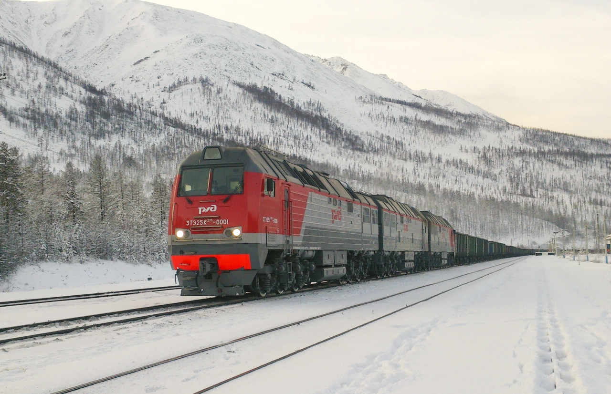

О чём этот сайт
Байкало-Амурская магистраль (БАМ) — это одна из крупнейших железнодорожных магистралей в мире. Её длина составляет более 4200 км. Она проходит по шести регионам России: по Иркутской и Амурской области, по Якутии и Бурятии, по Хабаровскому и Забайкальскому краю.
История строительства Байкало-Амурской магистрали тянется с 1938 года, когда её строили заключённые сталинского ГУЛАГа, по 2003 год, когда было завершено строительство Северо-Муйского тоннеля.
Постройка БАМа решала задачи общенационального уровня — открывался доступ к огромным природным богатствам Сибири, обеспечивался короткий путь Запад — Восток, а также парировалась близость Транссиба к государственной границе.
Строительство продолжается и сегодня. Для увеличения провозных мощностей на БАМе ведутся работы по укладке вторых путей.
Здесь вы найдёте историю строительства БАМа, фотогалерею, сборник произведений искусства про БАМ.
